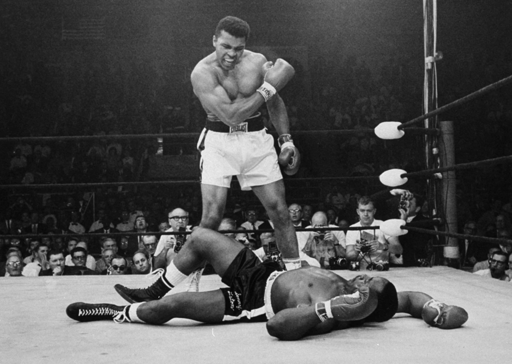

Muhammad Ali
"I'm not the greatest; I'm the double greatest. Not only do I knock 'em out, I pick the round."

Muhammad Ali standing over Sonny Liston.
Muhammad Ali career achievements
- Built a record of 19-0 with 15 knockouts over his first 3 years.
- Upset Sonny Liston to claim the Heavyweight Champion title.
- He continued to dominate the boxing world, knocking out Sonny Liston again in the 1st round a year later.
- Stripped of his championship and unable to fight in the U.S. for 3 1/2 years after refusing to fight in Vietnam, Muhammad Ali used this time to advocate for African-American pride and racial justice, as well as criticizing the Vietnam War, many people started taking his side after initial backlash.
- In the 'Fight of the Century' Muhammad Ali suffered his first loss in 32 fights to the hands of Joe Frasier
- Muhammad Ali went on to win the next 10, before suffering a broken jaw in the second round against Ken Norton and losing after a 12-round decision. Ali would defeat Norton later in a rematch.
- Ali also went on to rematch Joe Frazier, winning after a unanimous 12-round decision
- Ali regained the title that was stripped from him in 1974, dethroning George Foreman after knocking him out in the eighth round
- The next few years Ali showed signs of slowing down, while still keeping his title for nine more fights, as well as defeating Joe Frazier in their third bout, the end of his career was coming
- In 1978 Ali would lose his title to Leon Spinks, who only had seven professions fights, Ali would regain the title from Spinks in just under a year and retire
- Two years into retirement Ali would make a comeback, unfortunately suffering a terrible loss to Larry Holmes and his final bout would be another loss by decision to Trevor Berbick.
- Ali's final boxing record is 56 wins and 5 losses with 37 knockouts.
- Regardless of the low quality fights near the end of his career, Ali is regarded as one of the greatest fighters ever, if not the greatest. The quality of his opponents during his prime and the way he put them down in the ring will keep him immortal in the boxing world.